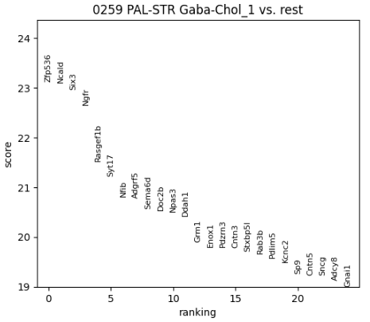
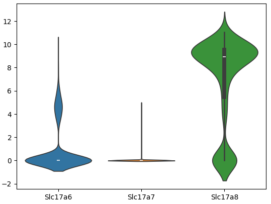
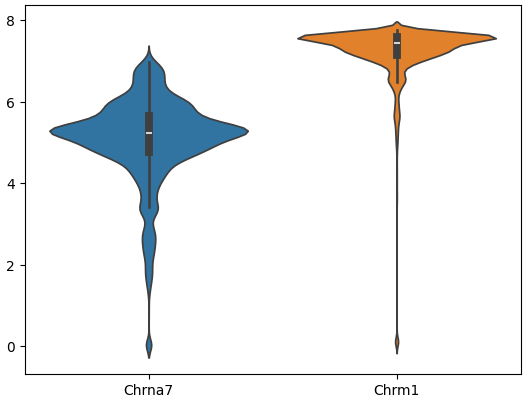
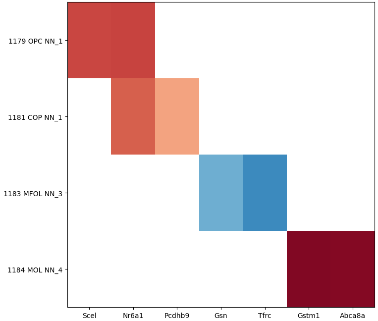
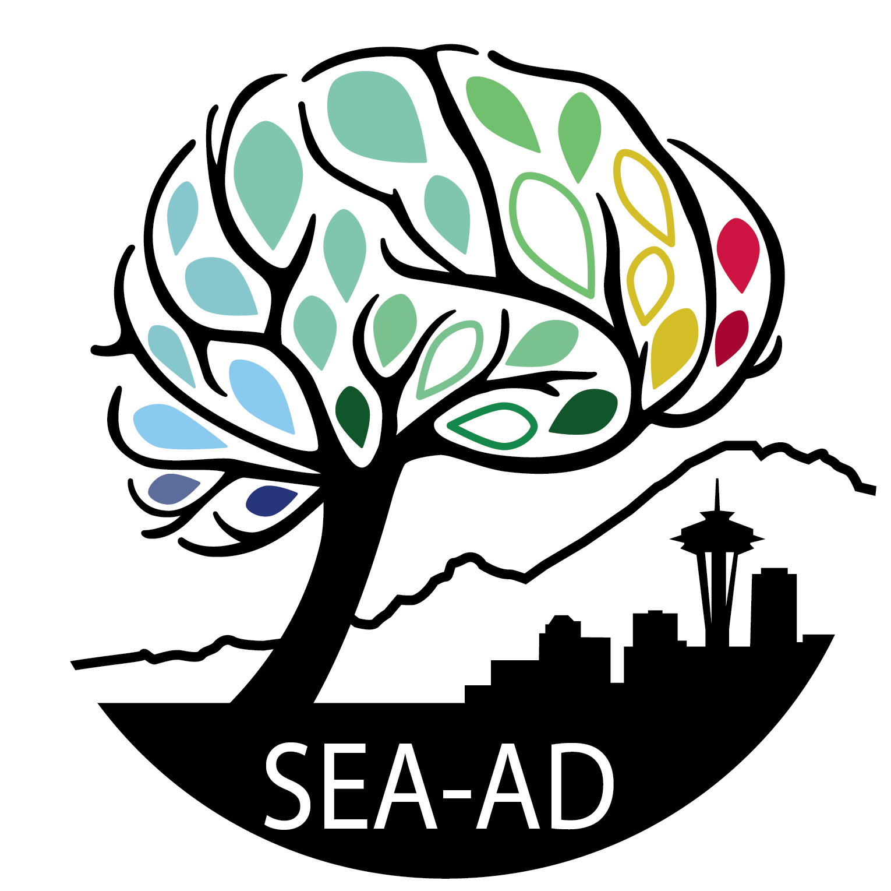
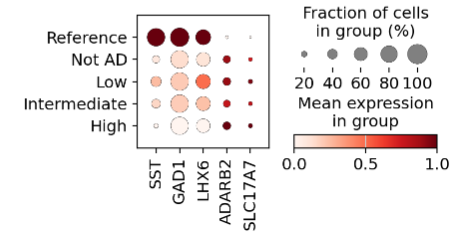

A collection of Jupyter notebooks and other guides supporting data and tools available at Allen Brain Cell (ABC) Atlas Access. These resources were designed for researchers with more limited programming experience. For more extensive data access options, please visit ABC Atlas Access. To explore these data sets interactively, visit the ABC Atlas. Note: both SEA-AD notebooks include a brief introduction to Google Colab for folks unfamiliar.
Getting started guide
Download and install Anaconda and GitHub Desktop on a Windows machine to access ABC Atlas Jupyter notebooks.

Find differentially expressed genes
Use ABC Atlas single-cell RNA-seq data to identify differentially expressed genes between two cell types using Scanpy.

Plot Gene Expression in scRNA-seq data
Plot VGluT1, VGluT2, and VGluT3 expression across mouse midbrain cell types using ABC Atlas data.

Plot Imputed Gene Expression in MERFISH data
Plot imputed Chrna7 and Chrm1 expression in CA1 glutamatergic neurons using ABC Atlas spatial transcriptomics data.

Identify Aging-Related Genes
Identify and plot aging-related differentially expressed genes across mouse oligodendrocyte cell types using ABC Atlas data.

SEA-AD Data Access
A template for browsing, downloading, and loading SEA-AD single-cell data into AnnData object.

SEA-AD MTG data exploration
Download SEA-AD MTG single-nucleus RNA-seq data and assess how Sst interneurons change in AD.
Provide feedback
Have a suggestion for how to improve one of these notebooks? Please fill out this form and let us know!
Add Your Application
Have a use case that you want included on this site? Either fill out this form or submit a GitHub issue with the notebook name, short description, notebook URL (or copy of the notebook itself), and an icon image and we will add it to the site!